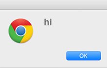
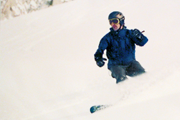
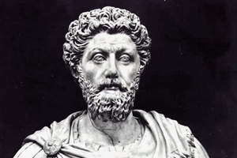

Welcome and thanks for visiting. The reason I’m putting this site together is to measure my progress into web development and to some extent, life. So far I have learned a bit of HTML and CSS. Just enough to put this site together and style it. The next step in the process is to tackle Javascript So far I’ve completed the first Javascript lesson on “The Complete Web Developers Course” on Udemy.com - I created a button that, when clicked, opens a browser dialog box with the word “hi” in the middle. Not much, but it the first step.
“The only way to do great work is to love what you do. If you haven't found it yet, keep looking. Don't settle.”
This site is going to be my personal bootcamp. I will be building, re-builing, revising and updating the site as my skills increase along with my confidence. Everything will be designed and coded by me with the intention of becoming a professional web developer. Designer? Maybe, we’ll see how it goes. I do have a background in graphic design, 20 years long. I designed for print - I worked at many different companies from big ad agencies in NYC to a small political design house in San Francisco - and I also built PowerPoint presentations in Seattle, WA. I’ve moved a lot. I don’t get bored as much as I get curious.
My curiosity grabbed me again while in Seattle and this time it lead me into wood construction and carpentry. That was great, but the timing could have been a lot better. Soon after I entered the world of home construction the great recession of 2008 hit, hard. Had I been at it a bit longer leading up to the crash I may have been able to navigate the difficult times better. But as it was, I got laid off from a great job that I loved building custom cabinets and installations for homes and museums in and around Puget Sound. With no where else to turn I decided to go back to graphic design.
It was fine but not satisfying at all any more. This time I was bored and needed to do something else. So I took another turn, following my curiosity, this time into sustainable organic farming. In Colombia. With my wife and two young daughters. That was another great learning experience and one that ultimately lead me to web development.
It’s not as far fetched as it might sound, but in my search for meaningful, satisfying work I tried a lot of different things. Steve Jobs said. “The only way to do great work is to love what you do. If you haven't found it yet, keep looking. Don't settle.” I want to do great work. I believe I have found what I love and will develop a passion for.
I’ve heard the same advice many times that all you have to do is find your passion and do that for work. It’s terrible advice. I’ve learned that passion comes from focusing on a skill, building proficiency and then, ultimately, mastery. That’s where passion comes from, mastering a skill and being able to do great work.
I am passionate about snowboarding. The first day I was on a snowboard I was terrible. I fell and bruised my body to the point that I couldn’t walk the next day. I didn’t feel passion at that point, I felt defeated and beat up. But slowly over time as I committed time and energy I got good. Then I got better and then I got really good. I became passionate about riding. And I rode a lot all over the US and Canada.
The approach I am taking with web development is to measure each step the same way I measured my progress with snowboarding. At this moment I am on the green, no, the bunny hill. But I did just nail a run all the way with out falling. Next is to move up to the blue runs and then the double black diamonds. From there, it’s backcountry!
This analogy works for me. And this is how I measure all of my learning now. I must have a way to measure my progress because it keeps me focused. I celebrate my successes (briefly) and I analyze my failures (quickly) then move on.
I have found a way to measure my progress that makes the next step, the next plateau, the next set back and the next success a lot easier. These last two years have been an incredible period of growth and maturity. I have discovered my weaknesses and how I learn. Doesn’t mean this is going to be easy, but it ain’t gonna be hard either. Once I embraced the hard stuff, the obstacles, as the one and only way to learn, the only thing that will create growth, it did get easy, in a way.
“The impediment to action advances action. What stands in the way becomes the way.”
This site will also have a blog. There I will write just what ever is on my mind that particular day. I have been keeping a journal since last May. It is the single best decision I have made on this journey. It is where I log my successes and analyze my set backs. It is where I dump the contents of my brain on an almost daily basis. It works. Sometimes I wake up and the first thing I do is reach for my book and start dumping. Sometimes it feels like I’m emptying the trash. It’s also where I give myself a kick in the ass when I need it. I’m my own coach and a devoted folower of stoic philosophy.
I will also talk about my web development progress, and about the things I have found that have helped me make progress. I have discovered many wonderful tools from books to meditation, to help me along the way. I have found mentors in books, blogs and social media. All incredible, all generous with their time and knowledge. I am grateful to them all.
While I am learning web development, inching closer and closer to my first paying client, I am still living in Colombia with my wife and our now three children - we added a son to the mix in September 2015. To make money I am teaching English to business professionals here and having a great time doing it. For most of my students I am the only native English speaker they have access to. Which means that often, well most of the time, they don’t want to learn from the book. So instead of learning about active voice, present perfect continuous and prepositions, we spend 2 hours just talking. This is fine with me because I feel privileged to have the opportunity to learn about their lives. What makes them different from me, but really what makes them a whole lot like me.